|
Ritorna all'indice delle parrocchie
Il numero abbinato ad ogni famiglia indica la relativa posizione nello Stato delle Anime
1 - Prete Giuseppe Giuliani - Paroco di questa Parrocchia
2 - Galanti Giuseppe - lavoratore di terreni altrui
3 - Sestigiani Niccolò - mezzaiolo lavora il terreno
4 - Palagi Giovanni - fittuario
5 - Frangialli Vincenzo - mezzaiolo e lavoratore di terreni
6 - Gigli Stefano - ortolano
7 - Quercini Domenico - mezzaiolo e lavoratore di terreni
8 - Ricci Antonio - fittuario e lavoratore di terreni
9 - Morandi Austino - mezzaiolo e lavoratore di terreni
10 - Faleri Ansano - mezzaiolo e lavoratore di terreni
11 - Baldi Giuseppe - fittuario e renaiolo
12 - Bernini Francesco - ortolano e renaiolo
13 - Ricci Francesco - ortolano e lavoratore di terreni
14 - Butini Orazio - pigionale va a opera sopra i terreni
15 - Cerretani Rosa - vedova - pigionale - 2
16 - Bagnacci Giuseppe - mezzaiolo e lavoratore di terreni
17 - Giachetti Orazio - mezzaiolo lavora il terreno
18 - Bandi Gaetano - fittuario e lavoratore di terreni e ortolano
19 - Giannetti - mezzaiolo e lavoratore di terreni
20 - Lotti Francesco - mezzaiolo e lavoratore di terreni
21 - Mugnaini Domenico - mugnaio e lavoratore di terreni
22 - Cinelli Francesco - mugnaio e lavoratore di terreni
23 - Casali Niccolò - fabbro
24 - Pianigiani Domenico - mezzaiolo - 2
25 - Cappelli Giuseppe - mezzaiolo
27 - Contigiani Bennardino - treccolone
28 - Ricci Gaetano - ortolano
29 - Masi Stefano - mezzaiolo e lavoratore di terreni
30 - Bernardi Placido - mezzaiolo ... ortolano e lavoratore di terreni
31 - Petrilli Michel'Angiolo - ortolano mezzaiolo e lavoratore di terreni
32 - Lecchini Baldassarre - fabbro
33 - Savelli Giacomo - mezzaiolo
34 - Bennardi Placido - ortolano e lavoratore di terreni
34 - Lenzi Ferdinando - oste e calzolaro
Comunità di Ravacciano
1 - Laghi Giuseppe - mezzaiolo
2 - Meoni Niccolò - mezaiolo e treccolone
3 - Livi Giuseppe - mezzaiolo lavora il terreno
4 - Vivi Agostino - mezzaiolo ortolano
5 - Gigli Giovanni Battista - mezzaiolo e oste
6 - Lisi Giovanni Battista - contadino attende al campo e lavora molte terre altrui - 2
6 - Rosi Caterina - vedova - pigionale - fila il lino
7 - Merlotti Ansano - sarto
8 - Chiamari Domenico - vetturale
9 - Ramerini Bastiano - fa l'ortolano
10 - Sanelli Agostino - mezzaiolo e lavorator di terreni
11 - Giachetti Andrea - mezzaiolo e lavorator di terreni
12 - Badii Antonio - mezzaiolo e lavorator di terreni
13 - Ciapini Gaspare - mezzaiolo e lavorator di terreni
14 - Betti Giovanni - mezzaiolo lavora il terreno
15 - Fantacci Domenico - mezzaiolo e lavor di terreno
16 - Bartalini Giovanni - mezzaiolo lavora il campo
17 - Brecchi Atto - fittuario di mulino
18 - Memmi Giovanni - mezzaiolo lavora il campo
19 - Maremmi Pietro - mezzaiolo lavora il campo
21 - Peteni Pietro - mezzaiolo lavorator di terreni
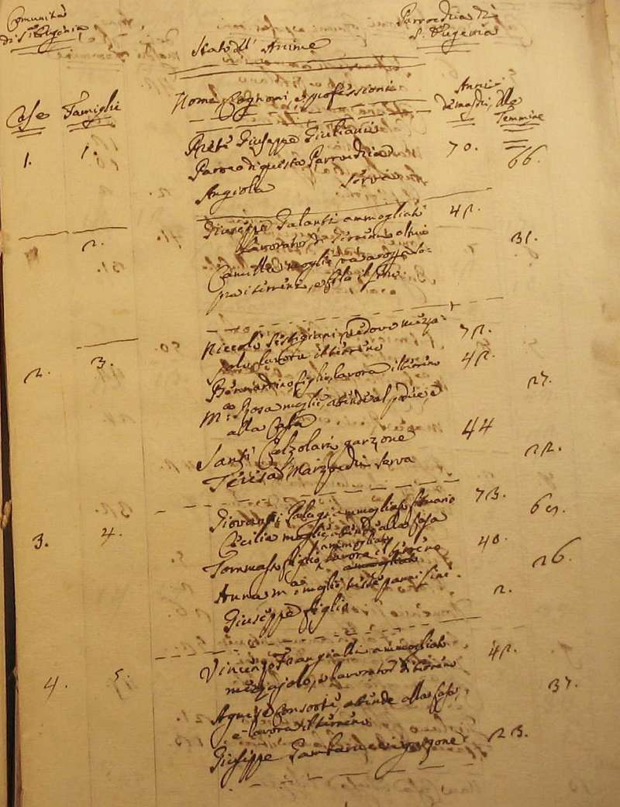
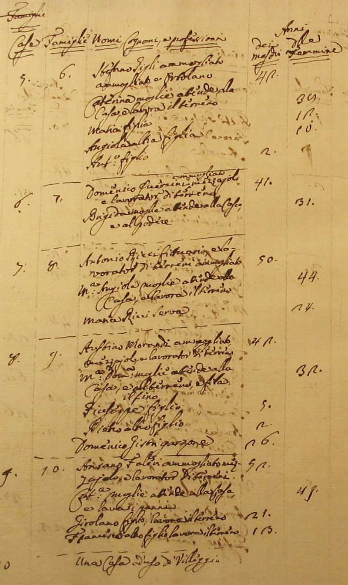
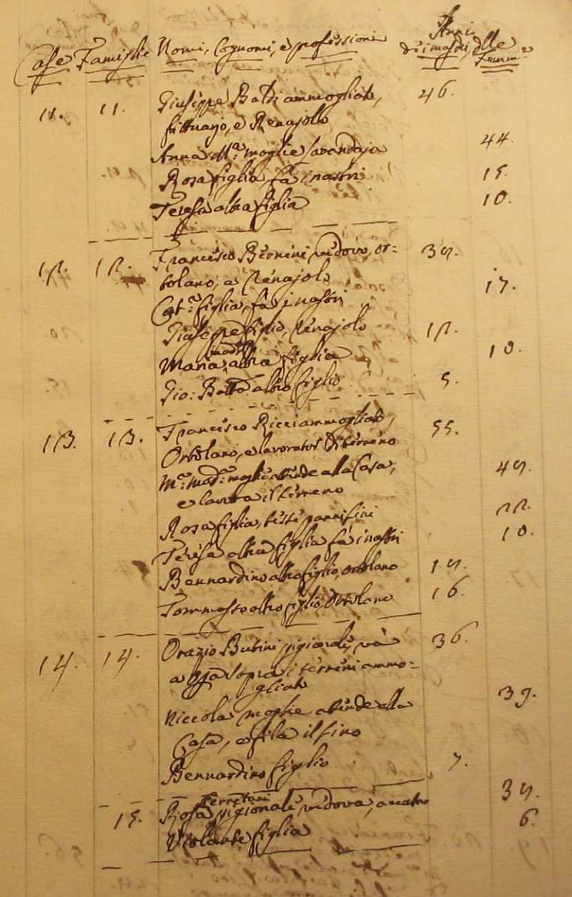
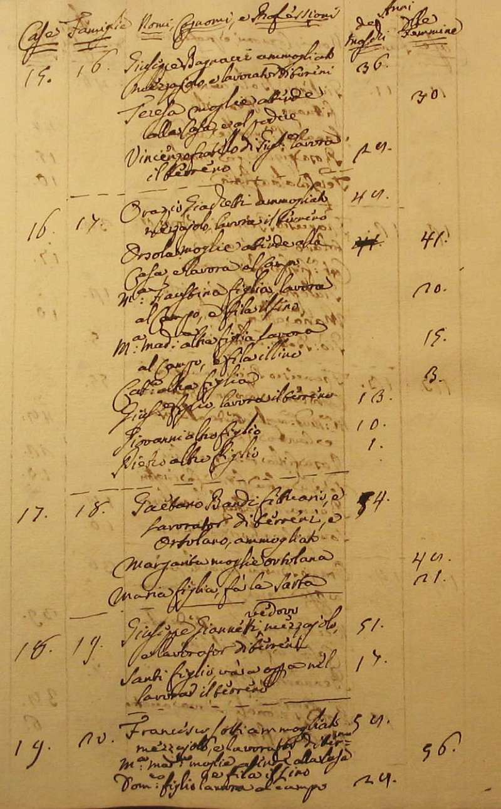
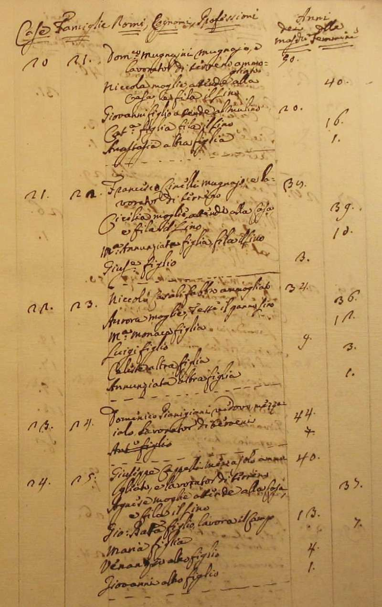
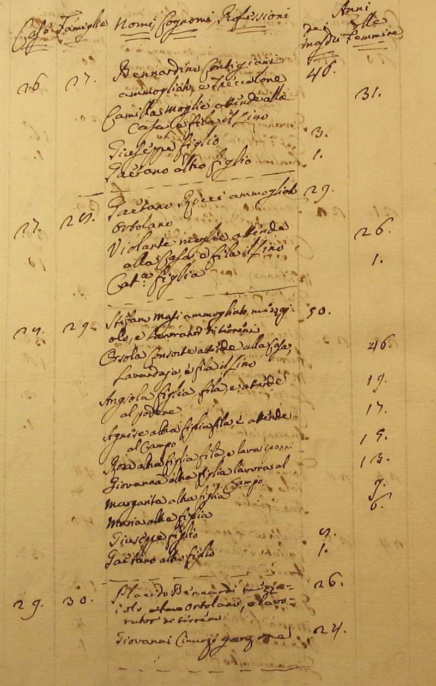
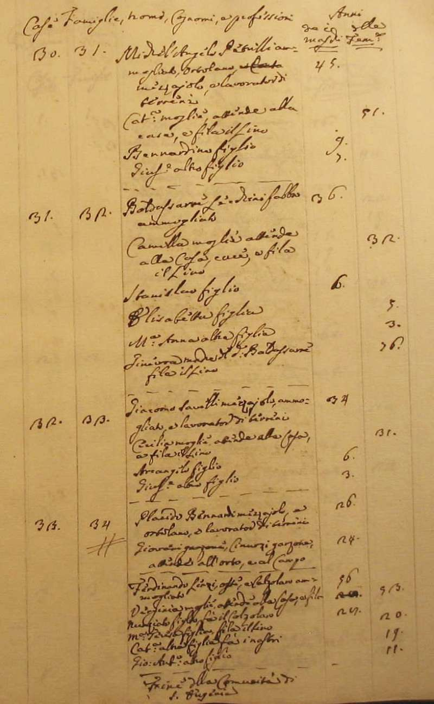
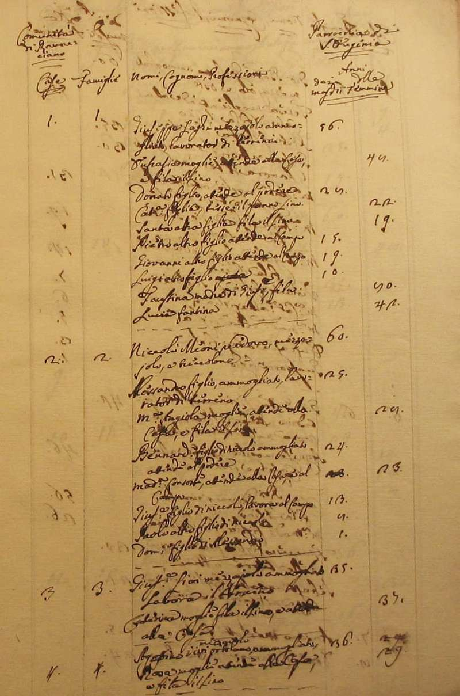

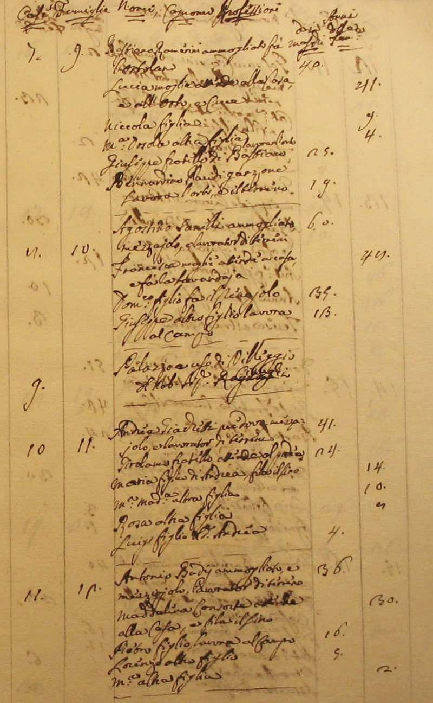
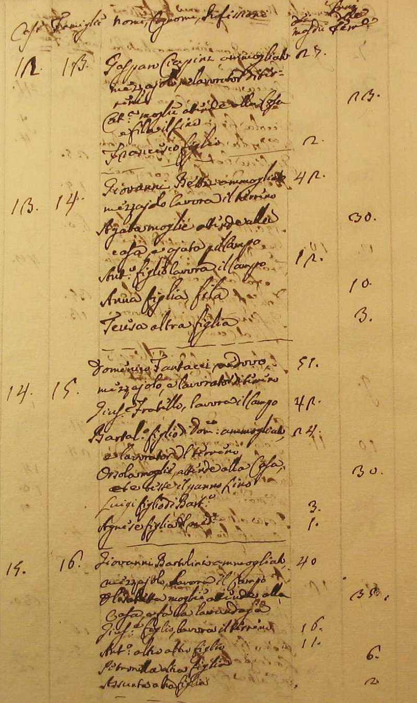
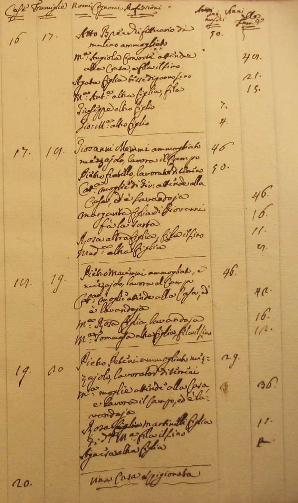
Torna ad inizio pagina
Ritorna all'indice delle parrocchie
| |

|